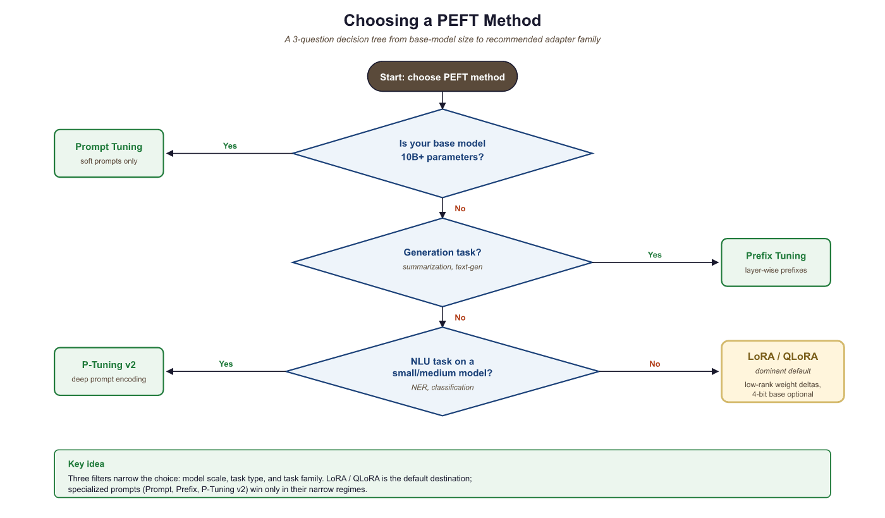

"A well-placed soft prompt does not change what the model knows. It changes what the model is trying to do."
LoRA, Softly Persuasive AI Agent
Soft prompt methods occupy a fascinating middle ground between prompt engineering and fine-tuning. Instead of choosing discrete text tokens that a human could read and interpret, soft prompt methods learn continuous, real-valued vectors in embedding space. These learned vectors are prepended to the input (or inserted into hidden layers) and steer the model toward a desired behavior without modifying the base model's weights. The family includes Prompt Tuning (input layer only, extremely lightweight), Prefix Tuning (all attention layers, more expressive), P-Tuning v1 (encoder-generated embeddings, bridging NLU and NLG), and P-Tuning v2 (deep prefix, strong NLU performance at all scales). Together they form a spectrum: as you add parameters, you gain task performance but reduce the elegance of a near-zero overhead approach. Cross-reference: Section 17.1 (LoRA), Section 17.2 (Advanced PEFT), Chapter 12 (Prompt Engineering).
Prerequisites
This section assumes familiarity with the LoRA and QLoRA techniques from Section 17.1 and the advanced PEFT methods in Section 17.2. You should understand how transformer attention works (including layer normalization) and be familiar with discrete prompt engineering from Chapter 12. Background in fine-tuning fundamentals from Chapter 16 is also helpful.
17.4.1 The Soft Prompt Family: A Taxonomy
A soft prompt is a set of learnable continuous vectors that are concatenated with the model's input representations and updated through gradient descent. Unlike the discrete tokens used in Chapter 12's prompt engineering, soft prompts exist only as floating-point tensors: they have no natural language interpretation, cannot be read by a human, and are discovered entirely by the optimizer.
Soft prompts reveal something profound about LLMs: the optimal instruction for a task is not necessarily expressible in human language. When you let the optimizer search freely in embedding space, it finds vectors that steer the model more effectively than any discrete prompt a human could write. These vectors often correspond to no real words at all. This suggests that the "language" models respond to best is not English or any natural language; it is the geometry of their own embedding space.
Despite the similar names, soft prompts and prompt engineering (covered in Chapter 12) are fundamentally different techniques. Prompt engineering crafts human-readable text instructions. Soft prompts are learned continuous vectors with no natural language interpretation; they cannot be read, shared as text, or transferred between different models. Soft prompts require gradient-based training, while prompt engineering requires only API access. Additionally, soft prompts are tied to a specific model checkpoint: if the base model is updated, the soft prompts must be retrained.
The key architectural question that distinguishes each method is where the learned vectors are inserted:
- Input layer only (Prompt Tuning): prepend vectors to the token embeddings before the first transformer block.
- All attention layers (Prefix Tuning, P-Tuning v2): prepend learned key-value pairs to every layer's attention, giving the model access to task-specific context at every depth.
- Specific positions via encoder (P-Tuning v1): use a small LSTM or MLP to generate embeddings that are inserted at chosen positions in the input sequence.
A useful mental model: think of a soft prompt as a context-setting preamble that only the model's internals can read. You are teaching the model to adopt a "mode" for a given task without rewriting any of its core knowledge.
Hard prompts (discrete text tokens from Chapter 12) must live in a model's existing vocabulary and are human-readable. Soft prompts are arbitrary floating-point vectors: they can represent concepts that no single word captures, and they are found by gradient descent rather than human authorship. The trade-off is interpretability vs. expressiveness.
17.4.2 Prompt Tuning (Lester et al., 2021)
Prompt Tuning, introduced by Lester, Al-Rfou, and Constant at Google (2021), is the simplest member of the soft-prompt family. It prepends a small set of learnable vectors (the "soft prompt") to the token embeddings at the very first layer of the transformer. All other weights remain frozen. During forward and backward passes, only these prefix vectors accumulate gradients.
The parameter count is striking: for a prompt of 100 tokens on a model with a 4096-dimensional embedding, you are training 100 x 4096 = 409,600 parameters. For a 7B-parameter model, that is roughly 0.006% of model parameters. Storage and swapping costs are negligible.
The main finding of the original paper was that Prompt Tuning performance scales with model size. On small models (100M parameters), it significantly underperforms full fine-tuning. As models approach 10B parameters, Prompt Tuning closes the gap almost entirely. For practitioners using frontier-scale models, it can match fine-tuning performance at a fraction of the cost.
The following code (Code Fragment 17.4.1) shows how to set up Prompt Tuning with the HuggingFace PEFT library.
# Adds learnable tokens only at the input embedding layer
from transformers import AutoModelForCausalLM, AutoTokenizer
from peft import PromptTuningConfig, PromptTuningInit, get_peft_model, TaskType
MODEL_NAME = "meta-llama/Llama-3.2-1B"
tokenizer = AutoTokenizer.from_pretrained(MODEL_NAME)
model = AutoModelForCausalLM.from_pretrained(MODEL_NAME, torch_dtype="auto")
# Configure Prompt Tuning
# num_virtual_tokens: length of the soft prompt (10-100 is typical)
# prompt_tuning_init: TEXT initializes from a real string; RANDOM is also valid
peft_config = PromptTuningConfig(
task_type=TaskType.CAUSAL_LM,
prompt_tuning_init=PromptTuningInit.TEXT,
prompt_tuning_init_text="Classify the sentiment of the following text:",
num_virtual_tokens=20,
tokenizer_name_or_path=MODEL_NAME,
)
# Wrap model: only the prompt embeddings are trainable
model = get_peft_model(model, peft_config)
model.print_trainable_parameters()
# Typical output: trainable params: 81,920 || all params: 1,235,814,400
# || trainable%: 0.0066
# Standard training loop (SFTTrainer or custom loop works unchanged)
# The PEFT wrapper transparently prepends the soft prompt during forward passes
from trl import SFTTrainer
from transformers import TrainingArguments
from datasets import load_dataset
dataset = load_dataset("imdb", split="train[:2000]")
training_args = TrainingArguments(
output_dir="./prompt-tuning-output",
num_train_epochs=3,
per_device_train_batch_size=8,
learning_rate=3e-2, # Higher LR than LoRA; soft prompts need it
warmup_steps=100,
logging_steps=50,
save_strategy="epoch",
fp16=True,
)
trainer = SFTTrainer(
model=model,
args=training_args,
train_dataset=dataset,
dataset_text_field="text",
max_seq_length=512,
)
trainer.train()
# Saving: only the soft prompt vectors are stored (~320 KB for 20 tokens)
model.save_pretrained("./my-prompt-tuning-adapter")PromptTuningConfig prepends 20 learnable virtual tokens (initialized from a text string) to every input. Only these ~320 KB of soft prompt embeddings are trained, leaving the full model frozen.Initializing the soft prompt from a meaningful text string (as shown above) consistently outperforms random initialization, especially when training data is limited. The intuition: you are starting the optimizer in a region of embedding space that is already near a useful representation. Random initialization requires many more gradient steps to escape noise.
When to use Prompt Tuning: very large models (10B+), scenarios where you need dozens of task-specific adapters sharing one base model, and simple classification or generation tasks where the additional expressiveness of deeper methods is not required.
17.4.3 Prefix Tuning (Li & Liang, 2021)
Prefix Tuning, from Li and Liang at Stanford (2021), takes a more aggressive approach: it prepends learnable key-value pairs to every transformer layer's attention mechanism, not just the input. Each layer gets its own set of prefix tokens that directly modulate what the attention mechanism attends to at that depth.
The practical consequence: Prefix Tuning is far more expressive than Prompt Tuning. Because prefixes influence attention at every layer, the model can steer mid-level representations and not just the initial input conditioning. This makes a material difference on generation-heavy tasks such as table-to-text and summarization, where the output structure is complex and sequential.
A key implementation detail is reparameterization. Directly optimizing prefix parameters can be unstable. During training, the prefix vectors are generated by a small MLP applied to a lower-dimensional latent space. This MLP introduces smoother gradients and prevents collapse or divergence. At inference time, the MLP is discarded; only the final prefix key-value tensors are stored and used.
Parameter count sits roughly between 0.1% and 1% of model parameters, depending on prefix length and model depth. This is roughly 10-100x more than Prompt Tuning, but still far below LoRA.
# Injects learned KV pairs at every attention layer
from transformers import AutoModelForSeq2SeqLM, AutoTokenizer
from peft import PrefixTuningConfig, get_peft_model, TaskType
MODEL_NAME = "google/flan-t5-large" # Encoder-decoder well-suited to prefix tuning
tokenizer = AutoTokenizer.from_pretrained(MODEL_NAME)
model = AutoModelForSeq2SeqLM.from_pretrained(MODEL_NAME)
# PrefixTuningConfig with reparameterization enabled by default
peft_config = PrefixTuningConfig(
task_type=TaskType.SEQ_2_SEQ_LM,
num_virtual_tokens=30, # Prefix length per layer
encoder_hidden_size=512, # Dimension of the reparameterization MLP
# prefix_projection=True by default: uses MLP during training,
# discards it at inference and uses the final projected vectors
)
model = get_peft_model(model, peft_config)
model.print_trainable_parameters()
# trainable params: 1,835,008 || all params: 783,150,080
# || trainable%: 0.2343 (about 0.23%)
# At inference, the MLP is transparent: model.forward() uses cached prefix KVs
# This means zero extra latency from the reparameterization MLP after training
print("Prefix Tuning config:", peft_config)
# PrefixTuningConfig(num_virtual_tokens=30, encoder_hidden_size=512, ...)encoder_hidden_size=512). After training, the MLP is discarded and only the cached prefix KVs are used at inference.Prefix Tuning was originally evaluated on encoder-decoder models (T5, BART) for tasks like summarization and table-to-text translation, where it showed its greatest strengths. On decoder-only models (GPT-style), it also works but the gains over Prompt Tuning are less dramatic for simple tasks. If you are working on structured generation with flan-T5 or similar, Prefix Tuning is the natural starting point.
When to use Prefix Tuning: generation tasks requiring structural control (summarization, data-to-text, dialogue response generation), encoder-decoder architectures, and situations where Prompt Tuning underperforms due to small model size.
17.4.4 P-Tuning v1 (Liu et al., 2021)
P-Tuning (v1), from Liu et al. at Tsinghua University and MIT (2021), targets a different problem: can autoregressive models like GPT compete with BERT on natural language understanding (NLU) tasks, given the right prompting strategy?
The paper's core insight was that the GPT-NLU performance gap was not an architectural limitation but a prompting problem. Hard prompts for NLU tasks like "The capital of France is [MASK]" require the learnable tokens to appear at specific non-prefix positions in the input. But naively placing random embeddings in the middle of a sequence leads to poor optimization: nearby token embeddings interfere with gradient flow, and the learned vectors collapse to degenerate solutions.
P-Tuning v1 solves this by routing the learnable prompt tokens through a small prompt encoder: an LSTM (or MLP) that takes positional indices as input and produces contextualized embeddings. The LSTM's sequential structure provides smooth gradient signal and prevents the collapse problem.
The resulting approach allows learnable tokens to appear anywhere in the input template, not just as a prefix. A P-Tuning template for a knowledge-probing task might look like: [P1][P2] The capital of [P3][P4] is, where P1-P4 are learned vectors generated by the LSTM encoder.
# Note: HuggingFace PEFT implements P-Tuning v1 as PromptEncoderConfig
from transformers import AutoModelForCausalLM, AutoTokenizer
from peft import PromptEncoderConfig, PromptEncoderReparameterizationType, get_peft_model, TaskType
MODEL_NAME = "gpt2-medium"
tokenizer = AutoTokenizer.from_pretrained(MODEL_NAME)
tokenizer.pad_token = tokenizer.eos_token
model = AutoModelForCausalLM.from_pretrained(MODEL_NAME)
# PromptEncoderConfig maps to P-Tuning v1:
# encoder_reparameterization_type selects LSTM or MLP
peft_config = PromptEncoderConfig(
task_type=TaskType.CAUSAL_LM,
num_virtual_tokens=20,
encoder_reparameterization_type=PromptEncoderReparameterizationType.LSTM,
encoder_hidden_size=128, # LSTM hidden dimension
encoder_num_layers=2, # Number of LSTM layers
encoder_dropout=0.0,
)
model = get_peft_model(model, peft_config)
model.print_trainable_parameters()
# trainable params: 307,340 || all params: 354,841,948
# Includes both the virtual token embeddings AND the LSTM encoder parameters
# The LSTM encoder is used during both forward and backward passes.
# At inference, the LSTM is still present (unlike Prefix Tuning's MLP,
# which is discarded). However, you can cache the encoder outputs once
# and reuse them for all inference calls on a given task.
# Example: manual encode to show the two-stage process
import torch
prompt_encoder = model.prompt_encoder["default"]
# Step 1: LSTM generates contextualized prompt embeddings from learned input embeddings
# Step 2: these embeddings are prepended to the token embeddings in model.forward()The results from Liu et al. were striking at the time: GPT-style models, previously thought to be weak at NLU tasks without task-specific heads, matched or exceeded BERT on SuperGLUE benchmarks when guided by P-Tuning prompts. The conclusion: the bottleneck was prompt design, not model capability.
17.4.5 P-Tuning v2 (Liu et al., 2022)
P-Tuning v2, also from Liu et al. (2022), represents a convergence of ideas: it adopts the deep, layer-wise prefix injection strategy from Prefix Tuning but applies it to NLU tasks with a classification head, and demonstrates strong performance even at small model scales (as small as 300M parameters).
The key architectural features of P-Tuning v2 are:
- Deep prompting: prefix tokens are added to every transformer layer, not just the input, giving the same depth advantage as Prefix Tuning.
- Classification head: instead of treating everything as a language modeling task, P-Tuning v2 adds a task-specific linear head on top of the final hidden state, making it directly applicable to token-level tasks like NER and POS tagging.
- No reparameterization MLP: unlike Prefix Tuning, P-Tuning v2 optimizes prefix parameters directly (with careful learning rate selection), which the authors found to be stable for NLU tasks.
- Verbalizer-free: earlier soft-prompt approaches for NLU required mapping model outputs to class labels via "verbalizers" (mapping "positive" to class 1, etc.). P-Tuning v2 bypasses this with a direct classification head.
# Uses deep prefix tuning (all layers) with a classification head
from transformers import AutoModelForSequenceClassification, AutoTokenizer
from peft import PrefixTuningConfig, get_peft_model, TaskType
import torch
MODEL_NAME = "bert-base-uncased" # Works on encoder models too
tokenizer = AutoTokenizer.from_pretrained(MODEL_NAME)
# P-Tuning v2 for classification: use SEQ_CLS task type
# This adds a linear classification head on top of the frozen model
model = AutoModelForSequenceClassification.from_pretrained(
MODEL_NAME,
num_labels=2 # Binary classification
)
# P-Tuning v2 is PrefixTuningConfig with prefix_projection=False
# (direct optimization, no reparameterization MLP)
peft_config = PrefixTuningConfig(
task_type=TaskType.SEQ_CLS,
num_virtual_tokens=16,
prefix_projection=False, # Direct prefix optimization (P-Tuning v2 style)
)
model = get_peft_model(model, peft_config)
model.print_trainable_parameters()
# trainable params: 197,634 || all params: 109,682,178
# || trainable%: 0.1801
# Training with a standard classification objective
from transformers import TrainingArguments, Trainer
from datasets import load_dataset
import numpy as np
dataset = load_dataset("glue", "sst2")
def tokenize(batch):
return tokenizer(batch["sentence"], truncation=True, max_length=128, padding="max_length")
tokenized = dataset.map(tokenize, batched=True)
tokenized = tokenized.rename_column("label", "labels")
tokenized.set_format("torch", columns=["input_ids", "attention_mask", "labels"])
def compute_metrics(eval_pred):
logits, labels = eval_pred
predictions = np.argmax(logits, axis=-1)
return {"accuracy": (predictions == labels).mean()}
training_args = TrainingArguments(
output_dir="./p-tuning-v2-sst2",
num_train_epochs=5,
per_device_train_batch_size=32,
per_device_eval_batch_size=64,
learning_rate=5e-3, # Higher than full fine-tuning; prefix params need it
warmup_ratio=0.1,
evaluation_strategy="epoch",
save_strategy="best",
load_best_model_at_end=True,
metric_for_best_model="accuracy",
)
trainer = Trainer(
model=model,
args=training_args,
train_dataset=tokenized["train"],
eval_dataset=tokenized["validation"],
compute_metrics=compute_metrics,
)
trainer.train()num_layers defaults to the full model depth), and a classification head is trained alongside the soft prompts for NLU tasks like sentiment analysis.P-Tuning v2 and Prefix Tuning share the same deep prefix injection structure. The meaningful differences are task focus (NLU with a classification head vs. NLG with language modeling loss), reparameterization (Prefix Tuning uses an MLP; P-Tuning v2 optimizes directly), and scale sensitivity (P-Tuning v2 claims consistent gains down to 300M parameters while Prompt Tuning degrades badly at small scale). In practice, when using the HuggingFace PEFT library, the distinction between the two comes down to the config settings shown above.
17.4.6 Comprehensive Comparison
The table below summarizes the key characteristics of each soft prompt method and places them alongside LoRA and QLoRA from Section 17.1 for context.
| Method | Parameters | Where Applied | Strengths | Weaknesses | Best For |
|---|---|---|---|---|---|
| Prompt Tuning Lester et al. 2021 |
< 0.01% | Input layer only | Minimal storage; trivial to swap per task; near-zero inference overhead | Requires very large models; underperforms on small models and complex tasks | Large-scale models (10B+); simple classification and generation; multi-task serving |
| Prefix Tuning Li & Liang 2021 |
0.1 - 1% | All attention layers (KV) | More expressive; strong on generation; reparameterization improves stability | Higher parameter count than Prompt Tuning; MLP overhead during training | Summarization; table-to-text; encoder-decoder models |
| P-Tuning v1 Liu et al. 2021 |
~0.01 - 0.1% | Input layer (flexible positions) | Non-prefix insertion; enables GPT-style models on NLU; LSTM encoder adds stability | LSTM encoder present at inference; complex template design required | Knowledge probing; NLU with GPT-style models; SuperGLUE-style tasks |
| P-Tuning v2 Liu et al. 2022 |
0.1 - 1% | All layers (deep prefix) | Strong NLU across model scales; no verbalizer needed; classification head | Slightly more complex setup; less commonly used than LoRA in practice | NER, POS, NLU tasks; small-to-medium models; sequence labeling |
| LoRA Hu et al. 2021, Sec 15.1 |
0.1 - 2% | Weight matrices (WQ, WV, etc.) | Excellent performance across scales and tasks; well-studied; wide tooling support | More parameters than Prompt Tuning; requires rank selection | Most fine-tuning tasks; the dominant PEFT method in practice |
| QLoRA Dettmers et al. 2023, Sec 15.1 |
0.1 - 2% + 4-bit base | Weight matrices (quantized base) | LoRA quality at 4-bit memory; enables 70B fine-tuning on single GPU | Quantization overhead; limited hardware support for NF4 | Large models on consumer hardware; resource-constrained fine-tuning |
For practitioners making a practical choice, the following decision guide covers the most common scenarios:

17.4.7 Practical Considerations and Limitations
Soft prompt methods have unique practical characteristics that differ from weight-based methods like LoRA. Understanding these helps you avoid common pitfalls.
Training Dynamics
Soft prompts are notoriously sensitive to learning rate. They typically need much higher learning rates (1e-2 to 1e-1) than LoRA (1e-4 to 1e-3), because the prompt parameters must "move far" in embedding space relative to where they are initialized. Using a learning rate that works for LoRA will leave soft prompts nearly unchanged. Conversely, too-high a learning rate causes oscillation and poor convergence. A linear warmup of at least 100-200 steps is strongly recommended.
Multi-Task Serving
One of the most compelling use cases for soft prompts is multi-task serving with a single frozen base model. Each task gets its own soft prompt (a few hundred kilobytes at most), and switching tasks at inference time is a matter of swapping the prepended vectors. This pattern is far cheaper to operate than maintaining separate LoRA adapters when the number of tasks is very large (hundreds or thousands), since the per-task storage is negligible and the base model is never copied.
# One base model, many task-specific soft prompts loaded on demand
from transformers import AutoModelForCausalLM, AutoTokenizer
from peft import PeftModel
import torch
BASE_MODEL = "meta-llama/Llama-3.2-3B"
tokenizer = AutoTokenizer.from_pretrained(BASE_MODEL)
base_model = AutoModelForCausalLM.from_pretrained(
BASE_MODEL, torch_dtype=torch.float16, device_map="auto"
)
# Load multiple soft prompt adapters (each is ~200-500 KB)
task_adapters = {
"sentiment": "./soft-prompts/sentiment-adapter",
"summarization": "./soft-prompts/summary-adapter",
"ner": "./soft-prompts/ner-adapter",
}
def run_task(task_name: str, text: str) -> str:
"""Load the appropriate soft prompt and run inference."""
adapter_path = task_adapters[task_name]
# PeftModel.from_pretrained loads the prompt vectors and
# wraps the base model to prepend them during forward passes
model = PeftModel.from_pretrained(base_model, adapter_path)
model.eval()
inputs = tokenizer(text, return_tensors="pt").to(model.device)
with torch.no_grad():
outputs = model.generate(**inputs, max_new_tokens=64)
return tokenizer.decode(outputs[0], skip_special_tokens=True)
# Switch tasks with no base model reload
result_a = run_task("sentiment", "The product exceeded all my expectations.")
result_b = run_task("summarization", "Long article text goes here...")Composability with LoRA
Soft prompts can be combined with LoRA adapters. A model can have both a LoRA adapter (modifying weight matrices) and a prefix tuning adapter (injecting prefix KVs) active simultaneously. This is supported by the PEFT library's multi-adapter mechanism. The use case is niche but real: use LoRA for domain adaptation and a soft prompt for task steering on top.
Limitations
- Small-model performance: Prompt Tuning degrades significantly on models below 1B parameters. If you are working with smaller models, LoRA is reliably better. P-Tuning v2 mitigates this somewhat but does not fully close the gap.
- Interpretability: unlike LoRA's weight deltas (which can be analyzed and sometimes interpreted), soft prompt vectors have no linguistic meaning. Debugging a misbehaving soft prompt is difficult: you cannot read the prompt or introspect what it "says."
- Sensitivity to input format: because soft prompts steer the model through the input context, they are sensitive to tokenization and input formatting changes. A prompt trained on one tokenizer version may degrade on another.
- Industry adoption: in production, LoRA and QLoRA have become the dominant choice for most fine-tuning tasks. Soft prompts are used in specific scenarios (very large models, extreme multi-task serving) but are not the default. If you are new to PEFT, start with LoRA from Section 17.1.
Show Answer
Show Answer
Show Answer
Show Answer
- Soft prompts are learnable continuous vectors prepended to the input or hidden states. They steer model behavior without modifying any base model weights.
- Prompt Tuning is the lightest method (< 0.01% parameters), effective only for large models (10B+) and simple tasks.
- Prefix Tuning injects learned key-value pairs at every layer, giving it more expressive power for generation tasks at the cost of more parameters (0.1-1%).
- P-Tuning v1 uses an LSTM encoder to stabilize optimization of non-prefix embeddings, enabling GPT-style models to compete with BERT on NLU benchmarks.
- P-Tuning v2 combines deep prefix injection with a classification head, providing strong NLU performance even at small model scales.
- LoRA remains the dominant PEFT method in practice. Soft prompts are most valuable for extreme multi-task serving on large models, or specific NLU scenarios where P-Tuning v2 is well-suited.
- Soft prompts are sensitive to learning rate and initialization. Use text-based initialization and higher learning rates (1e-2 to 1e-1) than you would use for LoRA.
Exercises
Both prompt tuning and LoRA freeze the base model and learn a small set of new parameters. (a) What fundamentally distinguishes soft prompts from LoRA? (b) Why did LoRA become the default for production fine-tuning while prompt tuning largely faded? (c) Name one task category where prompt tuning still has an edge.
Answer Sketch
(a) Soft prompts add learnable embeddings at the input (or at every layer for prefix tuning), leaving model weights untouched and letting attention pull the prompt's information into the residual stream. LoRA modifies the weight matrices themselves via low-rank updates. (b) LoRA generalizes better to harder tasks, has higher capacity per learnable parameter, integrates cleanly with quantized base models (QLoRA), and the resulting adapter is composable with the base in a single matrix multiplication. Prompt tuning required care to converge, didn't scale well past simple classification, and gave smaller per-parameter quality gains. (c) Prompt tuning still wins for very-many-task multi-tenancy (you serve thousands of small task adapters cheaply: each is just 1-100 vectors), and for tasks where you must absolutely guarantee no weight modification (e.g., licensing constraints).
For a 7B model with hidden size d=4096 and 32 layers: (a) how many trainable parameters does prompt tuning with 20 virtual tokens add? (b) prefix tuning with 20 prefix vectors at every layer? (c) LoRA with rank 8 on the q and v projections of every layer? Compare as fractions of the 7B base.
Answer Sketch
(a) Prompt tuning: 20 x 4096 = 81,920 params (~0.001% of 7B). (b) Prefix tuning: 20 x 4096 x 2 (key+value) x 32 layers = 5,242,880 params (~0.07%). (c) LoRA r=8 on q,v: per layer = 2 matrices x (4096 x 8 + 8 x 4096) = 131,072; total = 131,072 x 32 = 4,194,304 params (~0.06%). Prefix tuning and LoRA are in the same parameter ballpark, but LoRA distributes its capacity multiplicatively into the weight matrices rather than additively into the activations, which is why it tends to outperform at the same parameter budget.
Sketch a 10-line PyTorch wrapper that adds N learnable tokens at the start of any input embedding for a HuggingFace Llama model. The wrapper should: (a) define an nn.Parameter of shape (N, hidden_size); (b) prepend it to the input embedding inside forward; (c) freeze every other parameter.
Answer Sketch
from torch import nn
import torch
class PromptedLlama(nn.Module):
def __init__(self, base, n_virtual=20):
super().__init__()
self.base = base
for p in base.parameters(): p.requires_grad = False
self.soft = nn.Parameter(torch.randn(n_virtual, base.config.hidden_size) * 0.02)
def forward(self, input_ids, attention_mask):
emb = self.base.get_input_embeddings()(input_ids)
soft = self.soft.unsqueeze(0).expand(emb.size(0), -1, -1)
x = torch.cat([soft, emb], dim=1)
am = torch.cat([torch.ones(emb.size(0), self.soft.size(0), device=emb.device), attention_mask], dim=1)
return self.base(inputs_embeds=x, attention_mask=am)
The non-obvious bit is initializing soft prompts from random tokens or from real embedding values; the latter often converges in 5-10x fewer steps because the optimization starts inside the model's natural embedding manifold.
You train soft prompts for a sentiment task, get 92% accuracy on the dev set, but the model produces gibberish on out-of-distribution inputs (longer sequences, code-mixed text). List three failure modes specific to soft prompts and a mitigation for each.
Answer Sketch
(1) Length sensitivity: soft prompts learn to interact with attention positions seen during training; with much longer inputs the prompt's effective influence dilutes. Mitigation: train with mixed-length batches and include up to 2x the longest expected production length. (2) Domain rigidity: soft prompts encode task identity narrowly; OOD inputs miss the right activation pattern. Mitigation: train with noisy or augmented prompts, or use prefix tuning (which inserts at every layer, increasing robustness). (3) Vanishing in long contexts: soft prompts at the input get attended-away after thousands of tokens. Mitigation: use prefix tuning or P-Tuning v2 so the learned vectors persist throughout the network. The general lesson: soft prompts are the lightest PEFT method but also the brittlest, especially for distributional generalization.
Recent work explores transferable soft prompts: can a soft prompt trained for task A be transferred to task B by composing it with a small residual adapter? This would allow a library of reusable prompt building blocks rather than training from scratch for each task.
Separately, work on prompt distillation attempts to compress a long soft prompt into a shorter one with equivalent task performance, reducing the memory and latency overhead during inference. These directions suggest soft prompts may evolve into composable, transferable primitives rather than monolithic per-task artifacts.
The original Prompt Tuning paper from Google included a striking experiment: they trained a single T5-XXL model with thousands of task-specific soft prompts and showed it could serve them all with no degradation, using a total storage overhead smaller than a single fine-tuned model copy. The result was a compelling early vision of "one model, many personalities" that remains highly relevant for large-scale serving infrastructure today.
What Comes Next
In the next chapter, Section 17.5: Knowledge Distillation, we explore knowledge distillation and model merging: techniques for creating smaller, specialized models from larger ones, and for combining multiple fine-tuned models without retraining.